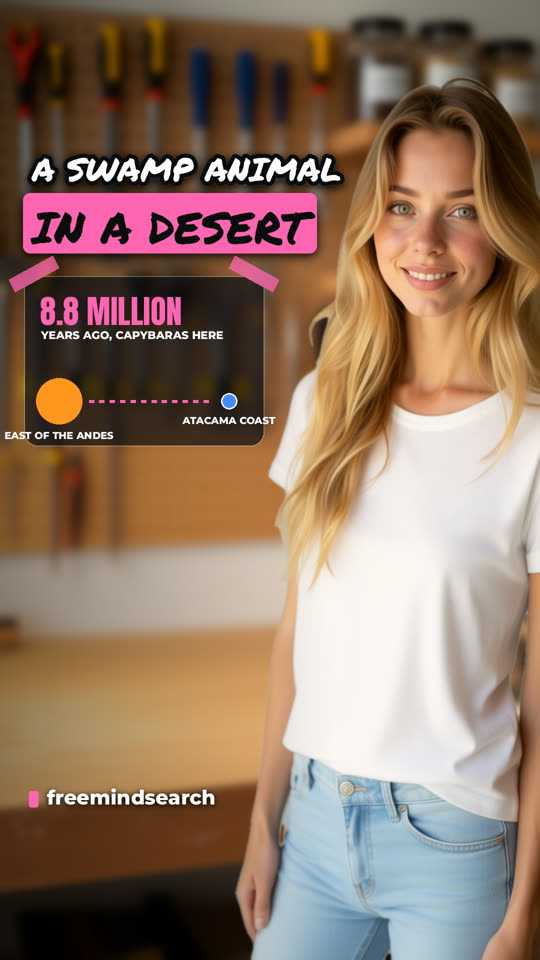

Story
A capybara tooth turned up in one of the driest deserts on Earth
Researchers found a capybara tooth almost nine million years old in Chile's Atacama, one of the driest deserts on Earth. Together with fossil fish, crocodiles and palm microfossils, it shows this coast was once green and wet, and it challenges the idea that the Atacama has always been dry.
Watch on FacebookWatch on InstagramWatch on TikTokWatch on YouTube
Would you rather visit the green Atacama of nine million years ago, or today's desert?
Sources
- Gutstein, Martinez et al., Late Miocene capybara in the Atacama Desert reveals a wetter climate and a transcontinental dispersal pathway (Scientific Reports, 2026): https://doi.org/10.1038/s41598-026-67368-2
- Live Science, 'Freakish' discovery of 9 million-year-old capybara tooth: https://www.livescience.com/planet-earth/freakish-discovery-of-9-million-year-old-capybara-tooth-supports-idea-that-atacama-wasnt-always-a-desert
- Gizmodo, A fossil capybara tooth suggests the Atacama Desert was once surprisingly wet: https://gizmodo.com/a-fossil-capybara-tooth-suggests-the-atacama-desert-was-once-surprisingly-wet-2000814119
- BBC Wildlife (Discover Wildlife), capybara tooth fossil in the Atacama: https://www.discoverwildlife.com/mammals/capybara-tooth-fossil-atacama-chile
Made with AI: the presenter, voice and visuals are AI-generated. Every story is researched and fact-checked by a person, with its sources listed.